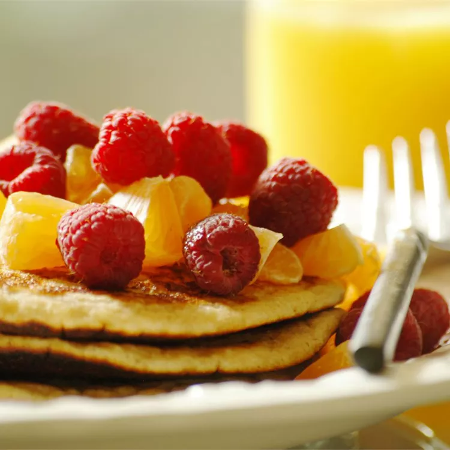

Odin Recipes

Dad's Double Whole Grain Pancakes
Light and fluffy pancakes, good on their own or soaked in maple syrup, made my family,s way!
My dad makes these pancakes. They are the BEST! A large batch of whole wheat pancakes to feed a crowd.
Purported to make you feel like "having your brains smashed out by a slice of lemon wrapped round a large gold brick".
Ingredients
- 1 cup all-purpose flour
- 1 ⅓ cups dry milk powder
- 1 teaspoon baking powder
- 1 ½ teaspoons baking soda
- 1 teaspoon salt
Directions(Steps)
- Step: 1
In a large bowl, sift all-purpose flour, milk powder, baking powder, baking soda and salt.
Stir in whole wheat flour.
In a small bowl, combine sugar, eggs, water, butter and vinegar.
Make a well in the flour mixture, and pour in the egg mixture. Mix until smooth.
- Step: 2
Heat a lightly oiled griddle or frying pan over medium heat. Pour or scoop the batter onto the griddle,
using approximately 1/4 cup for each pancake.
Cook until pancakes are golden brown on both sides; serve hot.